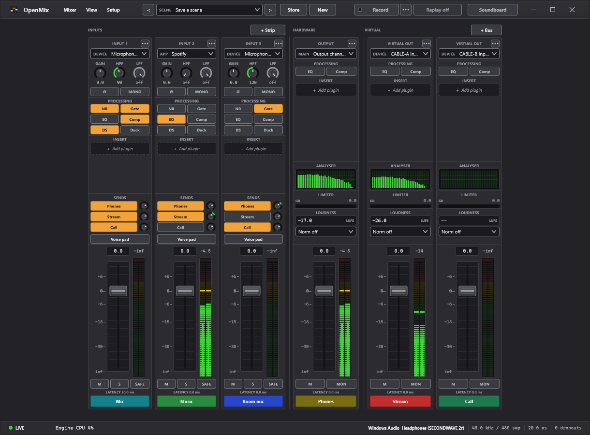

A mixing desk for your mic, music and calls.
OpenMix is a free, open-source audio mixer for Windows. Every source gets its own strip with noise removal, gate, EQ and compression, and every bus is its own mix: one for your headphones, one for the stream, one for the call.
Version 0.1.0 · Windows 10 and 11 · AGPLv3 · C++ and JUCE

One strip, top to bottom
Each strip runs the same chain, in the order you see it on the desk. Anything you don't switch on is skipped.
- Any source
A channel of your audio interface (ASIO or Windows Audio), another Windows input, a single app such as Spotify or a game, or everything an output device plays. Unplug a device or close an app and the strip reconnects when it comes back.
- Voice clean-up
RNNoise noise removal, a gate with hold, high- and low-pass filters, a 3-band EQ, a compressor and a de-esser. Ducking lowers music while you talk.
- Your plugins
Six VST3 slots per strip. Each plugin is test-started in a separate process first, so one that crashes on start-up is skipped instead of taking the mixer down.
- Sends
A key and a level knob per bus decide where the strip goes and how loud. Right-click a send for pre-fader.
Three mixes from one desk
Buses are where the strips meet. A buses play into real outputs; B buses play into a virtual cable that Discord or OBS picks as its microphone. Up to six, named however you like.
What you hear: everything, including the game and your own mic if you want it.
A1 → your headphonesWhat viewers hear: your mic and the music, without the call's notification sounds.
B1 → CABLE Input, picked in OBSWhat your friends hear: just the mic, cleaned up, without your music.
B2 → a second cable, picked in DiscordAlso in 0.1.0
- Bus processing
- EQ, compressor and VST3 inserts on every bus, a safety limiter at -0.3 dBFS, a spectrum analyser and short-term LUFS with optional normalisation to -14, -16 or -23 LUFS.
- Recording
- Multitrack WAV recording of every bus, every strip, or both, plus a replay buffer that keeps the last 30, 60 or 120 seconds of one bus.
- Scenes and hotkeys
- Save the whole mix as a scene and step through scenes from the header. Global hotkeys for mute, push to talk, the soundboard and scenes work while a game has focus.
- Soundboard
- Eight pads for WAV, MP3, FLAC or Ogg clips, played into whichever buses you choose.
- Remote control
- A phone page over Wi-Fi, OSC (
/openmix/strip/1/fader), MIDI learn, and Stream Deck through its OSC plugin. All off until you switch them on. - Keyboard first
- Every control is reachable with Tab. Faders and level knobs take console keys: arrows for 1 dB, Page Up and Down for 6 dB, Home for 0 dB.
Know this before you go live
- No virtual driver of its own yet. To feed Discord or OBS from a B bus, install a virtual cable such as VB-Audio Virtual Cable.
- Plugins share the mixer's process. The start-up test catches plugins that crash while loading, not ones that crash later while processing audio.
- The phone remote has no password. Anyone on the same network can use it while it is on, so only switch it on at home.
Download
0.1.0 has not been tagged as a release yet. Until it is, every change on main is built automatically.
Latest build
- Open the latest successful run under Actions.
- Download the
OpenMix-windows-x64artifact (you need to be signed in to GitHub). - Unzip it and run
OpenMix.exe.
Build it yourself
Visual Studio 2026 with the Desktop C++ workload. Clone with submodules and build the vs2026 preset; the README has the exact steps.